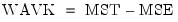

|
|
|
To perform both classical and non-parametric trend tests on a series in EViews, click on View/ Time-series Diagnostics/Trend Tests... from the main series menu to perform the following tests:The Options section of the dialog includes the options used in calculating the bootstrapped p-values of the tests.
may be used to evaluate the hypothesis.
The quadratic trend F-test performs a test the null hypothesis of no trend against an alternative hypothesis of a quadratic trend.


 of the autoregressive process slowly with the sample size so that the model accurately captures the dependency structure without overfitting.
of the autoregressive process slowly with the sample size so that the model accurately captures the dependency structure without overfitting. is the maximum of the number of positive differences or negative differences, and
is the maximum of the number of positive differences or negative differences, and  is the total number of observations. If , a continuity correction of -0.5 is applied to the denominator.
is the total number of observations. If , a continuity correction of -0.5 is applied to the denominator.  is normally distributed, allowing calculation of standard p-values. As with the Mann-Kendall test, EViews includes bootstrapped p-values since this assumption is often violated.
is normally distributed, allowing calculation of standard p-values. As with the Mann-Kendall test, EViews includes bootstrapped p-values since this assumption is often violated. is a
is a  -period moving average of
-period moving average of  ,
, ,
, -th element of
-th element of  .
. can be given by:
can be given by: